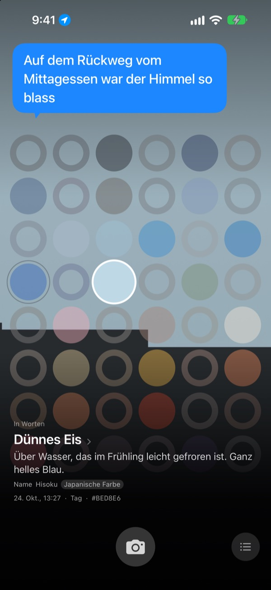
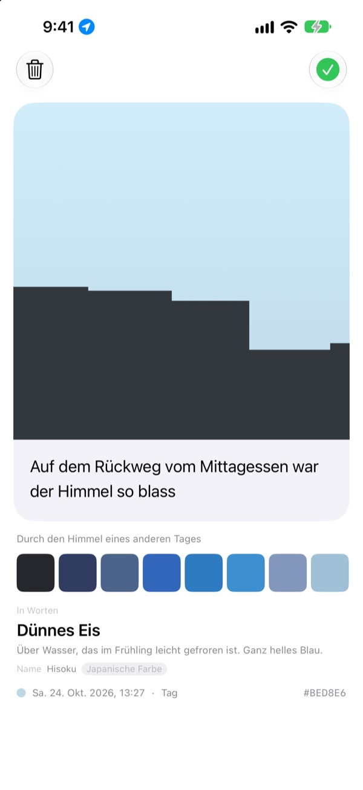
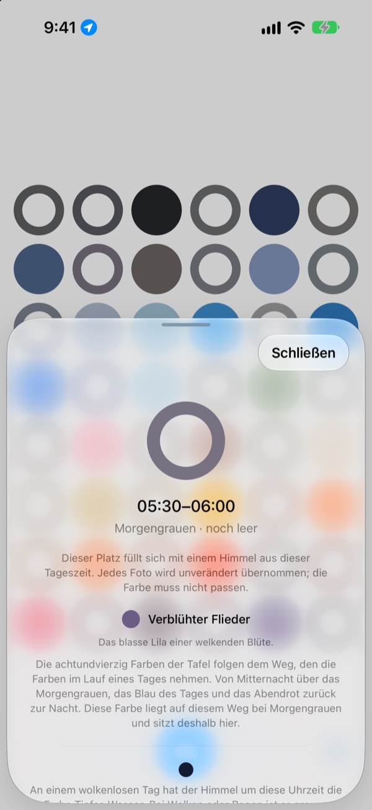
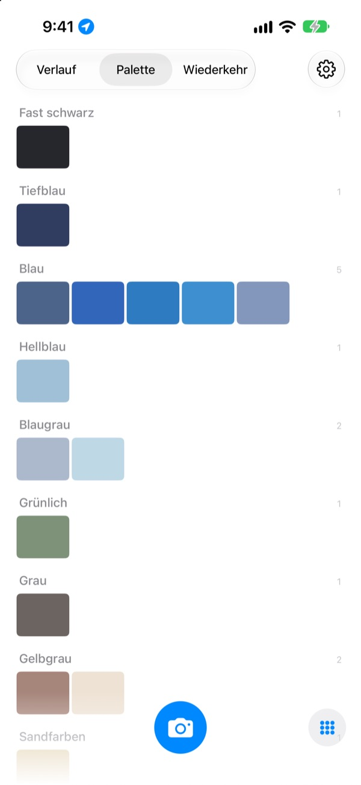

Welche Farbe hatte
der Himmel heute?
Fotografiere den Himmel, und auf dem Brett mit achtundvierzig Feldern füllt sich das Feld für diese Uhrzeit mit der Farbe, die du eingefangen hast. Dazu kommt ein Name, den man gleich vor sich sieht: Dünnes Eis, Schwimmbadfliese oder Reife Kaki.
Kostenlos. Kein Konto, keine Anmeldung.

Probier das Brett aus
Tippe ein Feld an, und du siehst, zu welcher Tageszeit es gehört. Füg ein Himmelsfoto hinzu, um das Feld für jetzt zu füllen, und blättere dann ein paar Tage weiter, um zu sehen, wie sich das Brett verändert.
Jeden Tag schaust du in den Himmel, und keine Farbe bleibt hängen
Der Himmel auf dem Weg zur Arbeit, der Himmel nach dem Mittagessen: Am Abend weißt du nicht mehr, welche Farbe er hatte. Die Himmelsfotos, die du doch gemacht hast, gehen zwischen allen anderen Bildern unter. SkyDex sammelt sie als Farben und legt den Weg, den der Himmel heute genommen hat, auf ein einziges Brett.
Jeder Himmel bekommt einen Namen
Jede Farbe bekommt zuerst einen Namen, den man vor Augen hat, etwa Dünnes Eis, Schwimmbadfliese oder Reife Kaki. Darunter folgt ein Name mit Herkunft: eine traditionelle koreanische oder japanische Farbe, ein Pigment oder eine Webfarbe.
Die App bleibt dabei ehrlich: Liegt die Farbe nah genug, steht dort „Name“, sonst „Nächster Name“.

Hinterlass eine Zeile
Gleich nach dem Foto öffnet sich eine Karte. Schreib auf, was dir beim Blick nach oben durch den Kopf ging. Tippst du später das Feld auf dem Brett an, schwebt es wieder über dem Himmel.
Du kannst auch die Farbe eines anderen Tages über dieses Foto legen und das Ergebnis als Bild teilen.

Leere Felder zeigen den Weg
Tippe ein leeres Feld an, und du erfährst, zu welcher Tageszeit es gehört und nach welcher Farbe du Ausschau halten kannst. Es zeigt dir auch, wie der Himmel zu dieser Stunde an einem wolkenlosen Tag aussieht, abgestimmt auf Sonnenauf- und -untergang an deinem Ort.
Die Farbe muss nicht passen. Das Grau eines bedeckten Tages ist auch die Himmelsfarbe dieses Tages.

Verlauf, Palette, Wiederkehr
Sieh deine Himmel der Reihe nach durch und sammle deine Farben in Paletten wie Blau, Grau und Sandfarben. Fotografierst du dieselbe Stunde an einem anderen Tag, stehen beide nebeneinander.
Widgets auf dem Home-Bildschirm zeigen dir das Brett von heute und den Himmel von heute auf einen Blick.

In drei Schritten geht es los
- 1
Schau nach oben
Tippe auf die Kamerataste unter dem Brett und lass den Himmel das Quadrat füllen.
- 2
Ein Feld füllt sich
Das Feld für die aktuelle Uhrzeit nimmt die eingefangene Farbe an und bekommt einen Namen.
- 3
Hinterlass eine Zeile
Schreib auf die Karte, die sich öffnet, was du beim Blick nach oben gedacht hast.
So teilt das Brett den Tag ein
- Mitternacht · 00:00–05:00
- sechs Felder
- Morgengrauen · 05:00–08:00
- sechs Felder
- Tag · 08:00–16:00
- zwölf Felder
- Später Nachmittag · 16:00–18:00
- sechs Felder
- Abendrot · 18:00–21:00
- zwölf Felder, alle 15 Minuten eines
- Nacht · 21:00–24:00
- sechs Felder
Um den Sonnenuntergang, wenn sich der Himmel schnell verändert, liegen die Felder dicht beieinander. Mitten in der Nacht, wenn er lange gleich bleibt, sind sie weit. Oben steht Mitternacht, und nach unten hin vergeht der Tag.
Häufige Fragen
Wie füllt sich ein Feld?
Ein Himmel, den du heute fotografierst, füllt das Feld für die Uhrzeit der Aufnahme, auch wenn die Farbe anders ausfällt als erwartet. So sah der Himmel zu dieser Stunde eben aus. Himmel von früheren Tagen kommen über ihre Farbe hinein: Liegt einer nah genug an der Farbe eines Feldes, füllt er es, und jeder Himmel füllt nur ein Feld.
Ein Feld, das gestern voll war, ist heute leer.
Das Brett zeigt immer heute. Ein Feld, das ein Himmel von gestern über seine Uhrzeit gefüllt hat, wird mit dem neuen Tag nur noch nach Farbe zugeordnet. Deshalb ist das Brett an manchen Tagen fast voll und wirkt an anderen leer. Deine Fotos sind nicht verschwunden: Jeder Himmel steht im Verlauf und, nach Farben geordnet, in der Palette.
Meine gefüllten Felder verblassen.
Das ist Absicht. Ein Foto behält eine Woche lang seine echte Farbe und verblasst dann langsam über die folgenden acht Wochen. Es wird nicht gelöscht und verblasst nie ganz. Fotografierst du den Himmel zu dieser Zeit noch einmal, ist die volle Farbe sofort zurück. Es gibt keine Serie, die reißen kann, und keine Punkte, die du zurückholen musst.
Muss die Farbe passen?
Nein. Es gibt kein Bestanden oder Durchgefallen. Jedes Foto wird gespeichert, und das Grau eines bedeckten Tages ist auch die Himmelsfarbe dieses Tages.
Warum fragt die App nach meinem Standort?
Nur damit ein leeres Feld dir zeigen kann, wie der wolkenlose Himmel zu dieser Stunde aussieht, abgestimmt auf Sonnenauf- und -untergang an deinem Ort. Die App nutzt nur einen ungefähren Standort auf den Kilometer genau, und an Fotos werden nie Koordinaten gehängt. Lehnst du ab, funktioniert trotzdem alles, dann mit Seoul als Bezugspunkt.
Kann ich einen Himmel aus meiner Mediathek hinzufügen?
Ja. Ein Himmel, den du statt mit der Kamera aus Fotos auswählst, wird ebenfalls quadratisch zugeschnitten und füllt wie ein frisch fotografierter das Feld für jetzt.
Wie lösche ich ein Foto?
Öffne das Foto und tippe auf „Löschen“, oder wisch es im Verlauf nach links. Es verschwindet zugleich von deinem Gerät und aus iCloud. Löschst du die App, bleibt die Kopie in iCloud erhalten, und nach einer Neuinstallation sind deine Himmel wieder da.
Was passiert, wenn ich das Gerät wechsle?
Deine Himmel liegen in deiner eigenen iCloud und ziehen mit auf ein neues Gerät, das mit demselben Apple Account angemeldet ist. Es gibt kein Konto und keinen Server, und Fotos und Farben gehen nie an den Entwickler. Keine Werbung, kein Tracking.
Ist das wirklich kostenlos?
Ja, alle Funktionen sind kostenlos. Wenn dir die App gefällt, kannst du dem Entwickler in der App ein Trinkgeld geben, aber damit wird nichts freigeschaltet.
Auf welchen Geräten läuft die App?
Auf dem iPhone ab iOS 17.0, nur im Hochformat.
Fehler, merkwürdiges Verhalten oder etwas, das du loswerden möchtest: Schreib an leeo@kakao.com. Wenn du dazuschreibst, was du gerade getan hast und welche iOS-Version du hast, lässt sich das Problem viel leichter finden.